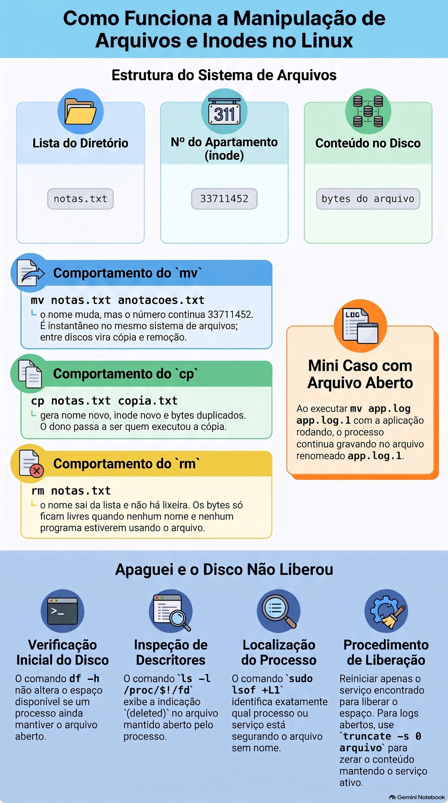
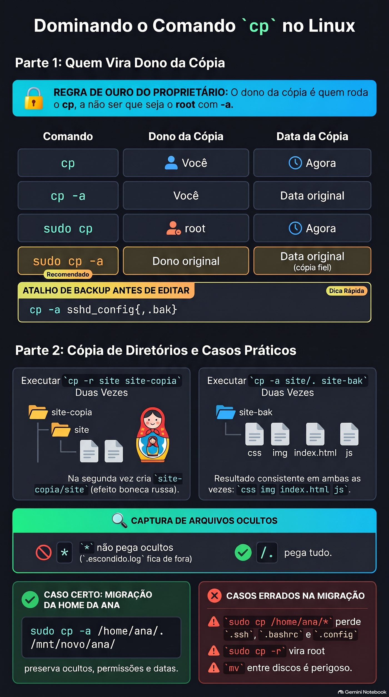

Lezione 1.4 · Creare, copiare, spostare ed eliminare
Imparerai a creare, copiare, spostare ed eliminare file e directory senza perdere ciò che conta. Il modo non è memorizzare le opzioni. Si tratta di capire cosa fa ogni comando al suo interno e creare tre abitudini: copiare prima di spostare, controllare prima di eliminare e diffidare dei comandi che non chiedono nulla.
| File | lezione 1.4 |
|---|---|
| Modulo | M1 · Riga di comando, lezione 4 di 10 |
| Quando | Settimana 2 |
| Alla fine puoi | Crea un albero di directory in un comando; eseguire il backup di una configurazione prima di modificarla; copiare le directory preservando proprietario, permessi e date; rinominare e spostare senza sostituire nulla per errore; cancellare sapendo esattamente cosa scomparirà; spiegare perché non c'è il cestino e perché il disco a volte rimane pieno dopo rm |
| Articoli di prova | LE 012.4 · LPIC-1 103.3 · RHCSA: creare, eliminare, copiare e spostare file e directory |
| Prerequisiti | lezione 1.3, con ~/lab13 ancora nelle VM |
| Meteo | Intorno alle 2:30 |
| Istantanee | m1a4-start e m1a4-end su entrambe le VM |
1 · Riscaldamento
Tre domande, a mente fredda, prima di leggere qualsiasi cosa. Scrivi le risposte; la chiave di risposta viene visualizzata alla fine.
- In una directory con
app1.log,app2.logeapp10.logcosa mostraecho app?.log? - Un file si chiama
-rf. Perchérm "-rf"non lo cancella e quale comando lo cancella? - Il tuo messaggio dice
/srv/app/current, ma la modifica che hai apportato non l'ha rilevato. Quale comando mostra dove ti trovi realmente?
2 · Perché è importante
Venerdì, 18:00. Un collega deve liberare spazio sul file server di un cliente e digita rm -rf /srv/arquivos/ antigo, con uno spazio aggiuntivo dopo la barra. La shell consegna due obiettivi al rm: l'intero /srv/arquivos/ e un antigo che lì non esiste nemmeno. -f mette a tacere l'unico avvertimento che ci sarebbe. Non c'è domanda, nessun messaggio, nessun cestino. Il fine settimana diventa ripristino del backup, se è presente un backup.
Il secondo caso è più comune e più discreto. Qualcuno ripristina una cartella dal backup con sudo cp -r. I file ritornano, ma con root come proprietario e la data odierna. Il sistema che utilizzava la cartella smette di scrivervi e nessuno collega qualcosa all'altro fino a lunedì.
Il terzo accade ogni settimana da qualche parte: un mv per la cartella condivisa sostituisce, senza chiedere, un file con lo stesso nome che apparteneva a qualcun altro. Nel terminale, cp, mv e rm fanno esattamente quello che hai digitato, senza chiedere conferma. Questa lezione mostra cosa fa ciascuno al suo interno e le abitudini di pochi secondi che ti permettono di utilizzare un server client senza paura.
3 · Modello mentale
Una directory è l'elenco dei residenti nell'atrio dell'edificio nella lezione 1.3. Ogni nome nell'elenco punta a un appartamento ed è nell'appartamento che risiede il contenuto.
mvcambia il nome nella lista. Rinominare, o spostare il nome nella lista su un altro piano, non cambia l'appartamento di nessuno. Quindi è istantaneo all'interno dello stesso edificio, che in Linux è lo stesso file system. In un altro edificio, cioè un altro record, poi è un vero cambiamento: copiare tutto e svuotare il vecchio appartamento.cparreda un appartamento nuovo come quello vecchio. Il proprietario diventa colui che ha copiato e la data è oggi, a meno che non si chieda-a, che copia anche proprietario, data e permessi.rmcancella il nome dalla lista. Quando nessun nome punta più all'appartamento e non c'è nessuno all'interno, cioè nessun programma ha il file aperto, lo spazio diventa libero. Non c'è il cestino: il concierge non conserva la lista barrata.- Nessuno chiede "sei sicuro?". Per impostazione predefinita,
cpemvsostituiscono silenziosamente un nome già esistente nella destinazione ermlo elimina senza confermare.
Da questo piano derivano tre conseguenze:
- Prima di modificare una configurazione, copiarla.
cp -acon l'espansione delle parentesi graffe lo fa in un secondo. - Prima di cancellare, vedere l'elenco: il protocollo della lezione 1.3, con
pwd -P,ls -laeecho. - La cancellazione non libera spazio mentre un programma sta ancora utilizzando il file. Ecco perché il disco a volte rimane pieno dopo
rm.
Lo stesso edificio, disegnato:
lista do diretório nº do apartamento conteúdo no disco
notas.txt ───────→ 33711452 ───────→ [ bytes do arquivo ]
mv notas.txt anotacoes.txt o nome muda; o nº continua 33711452
cp notas.txt copia.txt nome novo, nº novo, bytes duplicados
rm notas.txt o nome sai da lista; os bytes ficam livres
quando nenhum nome e nenhum programa os usaIl numero dell'appartamento esiste davvero: si chiama inode, e ls -i lo mostra. Lo vedrai nel passaggio 3.
Windows Bridge. In Esplora risorse, l'eliminazione lo invia nel Cestino e la sostituzione di un file apre una finestra di conferma. Nel terminale Linux non c'è nessuno dei due. E un comando fa il lavoro di due: mv è move e ren di cmd.exe contemporaneamente.


4 · Concetto a strati
Essenziale
| Termine | Cos'è | Esempio |
|---|---|---|
mkdir -p | Crea la directory e i genitori mancanti; non si lamenta se esiste già | mkdir -p ~/lab14/a/b/c |
touch | Crea un file vuoto; se esiste già basta aggiornare la data | touch index.html |
cp | Copia file; la copia acquisisce un nuovo proprietario e data | cp notas.txt /tmp/ |
cp -r | Copia una directory e tutto ciò che è all'interno | cp -r site site-copia |
cp -a | Copia di archivio: ricorsiva, preserva proprietario, permessi, date e scorciatoie | cp -a /etc/ssh ~/ssh-bak |
mv | Rinominare o spostare; sullo stesso file system, basta cambiare il nome | mv velho.txt novo.txt |
rm | Elimina file; directory, solo con -r | rm erro.log |
rmdir | Elimina solo la directory vuota | rmdir img |
-i | Domanda prima di ogni sostituzione o rimozione | mv -i a.txt pasta/ |
-I | In rm: chiedere una sola volta, prima di cancellare troppo | rm -rI copia |
-v | Mostra ogni elemento creato, copiato, spostato o eliminato | rm -v *.tmp |
-f | Punto di forza: non chiede e non avvisa se il target non esiste | rm -f cache.tmp |
| Inode | Il numero dell'appartamento: dove si trova effettivamente il contenuto | ls -i |
Tre modi di copiare che utilizzerai per tutta la vita:
cp -a sshd_config sshd_config.bak: la copia di backup prima della modifica. Con tasti,cp -a sshd_config{,.bak}.cp -a origem destino: la copia che conserva tutto, per backup e ripristino.cp -a origem/. destino/: copia il contenuto nella destinazione e restituisce lo stesso risultato la prima e la decima volta.
Windows Bridge
| Su Windows | Su Linux |
|---|---|
md, che alleva già i genitori | mkdir -p |
copy | cp |
xcopy /e o robocopy /e | cp -r |
robocopy /copyall | cp -a |
move e ren | mv, per entrambi |
del | rm |
rd /s | rm -r |
rd | rmdir |
| Cestino | Non esiste nel terminale: backup, snapshot e .bak |
| "Sostituire il file?" finestra | Non esiste per impostazione predefinita; -i chiede |
Approfondimento
Cancellare significa scollegare. rm rimuove il nome dalla lista; È il sistema che libera lo spazio, quando nessun nome o programma utilizza più il contenuto. Esistono strumenti di ripristino, ma su XFS ed ext4 raramente salvano la situazione. Ciò che viene salvato è il backup, l'istantanea e la copia .bak fatta in precedenza.
cp crea, mv rinomina. Ecco perché mv preserva tutto, anche l'etichetta SELinux, e cp no. Tra file system diversi, mv diventa una copia seguita da rimozione: richiede tempo e richiede spazio libero nella destinazione.
Ciò che mantiene -a. cp -a è equivalente a -dR --preserve=all: entra nelle directory, copia le scorciatoie come scorciatoie e conserva proprietario, gruppo, permessi, date, etichette SELinux e attributi estesi. Come utente normale, non puoi dare file a qualcun altro, quindi ne possiedi la copia. Solo root conserva il proprietario originale.
La copia cambia man mano che esiste la destinazione. cp -r a b crea b come copia di a se b non esiste. Se b esiste già, creare b/a. Lo stesso comando, eseguito due volte, dà risultati diversi. cp -a a/. b/ copia sempre il contenuto di a in b.
-f chiude. Nel rm il -f rimuove le domande e anche il messaggio di destinazione inesistente. E vale l'ultima opzione: rm -f disattiva un alias rm -i. Chi scrive rm -rf per abitudine non vede mai la domanda che farebbe l'alias.
-I è meglio di -i. -i chiede file per file, e dopo il ventesimo y nessuno legge altro. -I chiede una volta, quando la rimozione è ricorsiva o contiene più di tre file.
Un quasi cestino. cp e mv accettano --backup=numbered: prima di sostituire, salvano il vecchio file come nome.~1~, nome.~2~ e così via.
rm -rf / viene rifiutato; rm -rf /* no. La protezione predefinita, --preserve-root, riconosce solo la radice scritta da sola. /* viene espanso dalla shell in /bin, /boot, /etc e il resto, e ciascuno diventa un argomento comune. Per questo motivo una variabile vuota in uno script è pericolosa, come si vede al punto 7.
Cosa spetta al test
- Linux Essentials:
mkdiremkdir -p,rmdir,touch,cpcon-re-i,mvper rinominare e spostare,rmcon-r,-ie-f, e i caratteri jolly utilizzati con questi comandi. Le domande chiedono quale comando o opzione fa cosa. - LPIC-1 (103.3): gli stessi comandi con le opzioni preserva (
-p,-a) e ricorsione; la differenza trarmdirerm -r; caratteri jolly nelle operazioni di massa. 103.3 copre anchetar,gzipefind, che hanno una propria lezione. - RHCSA: “creare, eliminare, copiare e spostare file e directory” è un obiettivo letterale del test. Le attività richiedono, ad esempio, una copia in un percorso esatto preservando proprietario e autorizzazioni. Tieni d'occhio SELinux: un file spostato con
mvin una directory di servizio prende la vecchia etichetta e il servizio non può leggerlo.
5 · Rocky × Debian
I comandi sono gli stessi, dal pacchetto coreutils. Ciò che cambia è ciò che sta intorno a loro, e questo decide se il comando lo chiede prima o lo cancella silenziosamente:
| laboratorio-roccioso | debian-lab | |
|---|---|---|
| Alias radice | rm -i, cp -i e mv -i attivi in /root/.bashrc: come root, tutti e tre chiedono | Le stesse righe esistono in /root/.bashrc, commentato: non chiedere |
| Il tuo utente | Senza questi alias: nessuna domanda | Idem |
sudo rm, sudo cp, sudo mv | sudo non usa alias: non chiedono mai | Idem |
| versione coreutils | 8,32 | 9.x: alcuni messaggi cambiano una parola o l'altra |
| File system di installazione | XFS | ext4 |
mv da casa a /tmp | Istantanea se entrambi si trovano sullo stesso file system | Copiare e rimuovere sempre, perché /tmp è in memoria |
| Tag SELinux | mv riporta l'etichetta; cp prende il destino. Può interrompere un servizio. | Senza SELinux: la differenza non esiste |
6 · Laboratorio guidato
Aprire tre terminali: uno su rock-lab, uno su debian-lab e uno sul nodo Proxmox, per gli snapshot. Ad ogni passaggio, corri, confronta con l'output e solo dopo leggi il Decidi. Gli output sono estratti: numeri, date e nomi saranno diversi sullo schermo.
Each Decide è un vero caso di lavoro. Scegli la lettera prima di guardare la tabella: sbagliare qui, con la spiegazione a lato, è il modo più economico per sbagliare.
Step 1 · Snapshot prima di tutto. Le VM devono essere nello stato m1a3-fim, con ~/lab13 ancora lì. Sul nodo Proxmox dove viene eseguita ciascuna VM:
qm snapshot 201 m1a4-inicio
qm snapshot 202 m1a4-inicio
qm listsnapshot 201Output previsto: l'elenco termina con m1a3-fim, m1a4-inicio e current. In entrambe le VM, controlla che 1.3 abbia lasciato il materiale:
ls -A ~/lab13/logsPassaggio 2 · Crea l'intero albero in una volta. In entrambe le VM:
mkdir ~/lab14
cd ~/lab14
mkdir site/cssQualcosa come:
mkdir: cannot create directory 'site/css': No such file or directorymkdir crea un singolo livello. Il genitore site non esiste, quindi rifiuta. Ora con -p e con -v per vedere ogni passaggio:
mkdir -pv site/{css,js,img}
echo site/{css,js,img}
mkdir -p site/css
mkdir siteQualcosa come:
mkdir: created directory 'site'
mkdir: created directory 'site/css'
mkdir: created directory 'site/js'
mkdir: created directory 'site/img'
site/css site/js site/img
mkdir: cannot create directory 'site': File existsTre cose da vedere lì. Le chiavi non provengono da mkdir: la shell le espande prima, e echo mostra cosa ha consegnato, come i caratteri jolly 1.3. Il mkdir -p site/css ripetuto non dice nulla, perché esiste già e va tutto bene. mkdir site senza reclami -p.
Decidere 1 · La distribuzione che fallisce sul nuovo server. Scenario: lo script di distribuzione viene eseguito mkdir /srv/app/releases/$(date +%F) ogni notte. Su un server appena installato fallisce con No such file or directory. Cosa fare?
- A) Cambialo in
mkdir -pnello script. - B) Inizia a eseguire lo script con
sudo. - C) Aggiungi
2>/dev/nullalla fine della riga per eliminare l'errore. - D) Crea
/srv/app/releasesmanualmente su questo server e segui.
Scegli la lettera prima di guardare tabella.
| Se hai selezionato | Risultato | Perché |
|---|---|---|
| A | ✅ Giusto | -p crea i genitori mancanti e non fallisce se esistono già. Lo script inizia a funzionare sui server nuovi e vecchi, la prima e la centesima notte. |
| B | ❌ Sbagliato | La mancanza di permesso direbbe Permission denied. L'errore qui è un genitore inesistente e anche root non crea due livelli senza -p. |
| C | ❌ Sbagliato | Nascondi l'errore e la distribuzione continua senza la directory. La colpa appare più tardi, lontana dalla causa. |
| D | ❌ Sbagliato | Risolvilo oggi e fallisci sul prossimo nuovo server. La correzione appartiene allo script. |
Per risolvere: -p significa "vai fino in fondo e non lamentarti di ciò che già esiste".
Passaggio 3 · Il numero dell'appartamento. Primo touch, in entrambe le VM:
touch site/index.html site/css/style.css
ls -l --time-style=+%T site/index.htmlAttendere una decina di secondi e ripetere i due comandi. La dimensione resta zero, cambia solo il tempo. touch in un file già esistente non cancella nulla: aggiorna solo la data. Ora l'inode, il numero dell'appartamento del Modello Mentale:
echo "primeira linha" > notas.txt
ls -i notas.txt
mv notas.txt anotacoes.txt
ls -i anotacoes.txt
cp anotacoes.txt copia.txt
ls -i anotacoes.txt copia.txtQualcosa come:
33711452 notas.txt
33711452 anotacoes.txt
33711452 anotacoes.txt 33711460 copia.txtIl mv non ha cambiato il numero, solo il nome nell'elenco. La copia ha un nuovo appartamento, con il proprio numero.
Decidi 2 · Il registro da 40 GB. Scenario: app.log ha 40 GB, il disco ha 2 GB liberi e vuoi salvare il file corrente come app.log.1, nella stessa directory, con mv app.log app.log.1. L'app continua a funzionare. Cosa succede?
- A)
mvè istantaneo e non occupa spazio, ma l'app continua a scrivere sul file che ora si chiamaapp.log.1. - B)
mvfallisce per mancanza di spazio, perché deve copiare i 40 GB. - C)
mvè istantaneo e l'app avvia automaticamente la registrazione in un nuovoapp.log. - D)
mvrichiede alcuni minuti, proporzionali alla dimensione.
Scegli la lettera prima di guardare la tabella.
| Se hai selezionato | Risultato | Perché |
|---|---|---|
| A | ✅ Giusto | Nello stesso file system mv modifica solo il nome nell'elenco. L'app ha già aperto il file e conserva l'appartamento, non il nome: continua a registrare lì. Questo è il motivo per cui logrotate avvisa il servizio dopo la ridenominazione. |
| B | ❌ Sbagliato | Sarebbe cp o mv per un altro disco. Non esiste alcuna copia sullo stesso disco. |
| C | ❌ Sbagliato | Nessuno crea nuovi app.log. L'app inizia a utilizzare un altro file solo quando riapre il registro, dopo un ricaricamento o un riavvio. |
| D | ❌ Sbagliato | Il tempo proporzionale alla dimensione appare solo tra file system diversi. |
Da risolvere: mv sullo stesso disco è cambiare la placca della porta. Chi è dentro non se ne accorge nemmeno.
Passaggio 4 · La copia prima della modifica. Una configurazione falsa, in entrambe le VM:
printf 'Port 22\nPermitRootLogin no\n' > sshd_config
echo cp -a sshd_config{,.bak}
cp -a sshd_config{,.bak}
ls -l sshd_config*Qualcosa come:
cp -a sshd_config sshd_config.bak
-rw-r--r--. 1 rodrigo rodrigo 32 Nov 2 10:12 sshd_config
-rw-r--r--. 1 rodrigo rodrigo 32 Nov 2 10:12 sshd_config.bakIl {,.bak} diventa due parole: il nome senza niente e il nome con .bak. Ora modifica e confronta:
echo 'PasswordAuthentication no' >> sshd_config
diff sshd_config.bak sshd_config
cp -a sshd_config{,.bak-$(date +%F)}
ls sshd_config*Qualcosa come:
2a3
> PasswordAuthentication no
sshd_config sshd_config.bak sshd_config.bak-2026-11-02diff mostra esattamente cosa hai modificato. Con la data nel nome, il .bak di oggi non sostituisce quello di ieri. Sul server reale è lo stesso comando, con sudo e il percorso completo: sudo cp -a /etc/ssh/sshd_config{,.bak-$(date +%F)}.
Decidi 3 · Prima di fare confusione con l'SSH del client. Scenario: disattiverai l'accesso con password in SSH su un server client. Qual è il primo comando?
- A)
sudo cp -a /etc/ssh/sshd_config{,.bak-$(date +%F)} - B)
sudo cp /etc/ssh/sshd_config /tmp/ - C)
sudo vi /etc/ssh/sshd_config, attentamente. - D)
sudo mv /etc/ssh/sshd_config{,.bak}e scrivere un nuovo file.
Scegliere la lettera prima di guardare la tabella.
| Se hai selezionato | Risultato | Perché |
|---|---|---|
| A | ✅ Giusto | Copia accanto all'originale, con proprietario, permessi ed etichetta conservati, e con data. Se il sshd non sale il giro è un cp. |
| B | ❌ Sbagliato | /tmp viene cancellato al riavvio e in Debian 13 rimane in memoria. Il backup scompare proprio quando ne hai più bisogno. |
| C | ❌ Sbagliato | La cautela non è una via d'uscita. Se sshd non sale, potresti perdere l'accesso senza sapere dove si trovava prima. |
| D | ❌ Sbagliato | Per un momento il file non esiste. E quello nuovo nasce senza il contenuto, l'etichetta e i permessi dell'originale. |
Per risolvere: prima di spostarti, scatta una foto. La foto è .bak con la data, accanto all'originale.
Passaggio 5 · Chi diventa il proprietario della copia. Quattro copie dello stesso file root, in entrambe le VM:
cp /etc/hosts hosts-cp
cp -a /etc/hosts hosts-a
sudo cp /etc/hosts hosts-sudo
sudo cp -a /etc/hosts hosts-sudo-a
ls -l /etc/hosts hosts-*Qualcosa come:
-rw-r--r--. 1 root root 158 Jun 23 2020 /etc/hosts
-rw-r--r--. 1 rodrigo rodrigo 158 Jun 23 2020 hosts-a
-rw-r--r--. 1 rodrigo rodrigo 158 Nov 2 10:15 hosts-cp
-rw-r--r--. 1 root root 158 Nov 2 10:15 hosts-sudo
-rw-r--r--. 1 root root 158 Jun 23 2020 hosts-sudo-aLeggi riga per riga:
| Comando | Copia proprietario | Data della copia |
|---|---|---|
cp | Tu | Adesso |
cp -a, come stai | Tu, perché un utente comune non dà file a qualcun altro | L'originale |
sudo cp | radice | Adesso |
sudo cp -a | Il proprietario originale | L'originale: copia fedele |
Regola: il proprietario della copia è colui che esegue cp, a meno che non sia root con -a.
Decide 4 · Ripristino di venerdì. Scenario: la cartella /srv/dados/app, di proprietà dell'utente app, è stata eliminata. Il backup è in /backup/app, effettuato con cp -a. Come ripristinare?
- A)
sudo cp -a /backup/app /srv/dados/ - B)
sudo cp -r /backup/app /srv/dados/ - C)
cp -a /backup/app /srv/dados/, come utente. - D)
sudo mv /backup/app /srv/dados/
Scegli la lettera prima di guardare la tabella.
| Se hai selezionato | Risultato | Perché |
|---|---|---|
| A | ✅ Giusto | Root con -a restituisce proprietà, autorizzazioni, date ed etichette così come erano. E il backup è ancora lì. |
| B | ❌ Sbagliato | I file ritornano con il proprietario root e la data odierna. Il servizio, che funziona come app, non può più registrare. Provocherai questo in Quebra A. |
| C | ❌ Sbagliato | Senza root non consegnerai i file all'utente app e probabilmente non scriverai nemmeno a /srv/dados. |
| D | ❌ Sbagliato | Ripristina e scompari con il backup. Se qualcosa va storto, non c'è un secondo tentativo. E se /backup è un altro disco, mv copia tutto e cancella la sorgente. |
Per risolvere: il ripristino è cp -a come root. Il backup rimane dov'è.
Passaggio 6 · Copia delle directory. Esegui la stessa copia due volte, su entrambe le VM:
cp -r site site-copia
ls site-copia
cp -r site site-copia
ls site-copiaQualcosa come:
css img index.html js
css img index.html js siteLa seconda volta, site-copia esisteva già, quindi cp ha creato site-copia/site. In un backup notturno questa diventa una bambola russa. Ora in questo modo dà sempre lo stesso risultato:
rm -r site-copia
cp -a site/. site-bak
cp -a site/. site-bak
ls site-bakEntrambe le volte dà css img index.html js. site/. significa “cosa c'è all'interno del sito web”. Ora quelli nascosti, con i file 1.3:
mkdir dest-estrela dest-ponto
cp -a ~/lab13/logs/* dest-estrela/
cp -a ~/lab13/logs/. dest-ponto/
ls -A dest-estrela
ls -A dest-ponto.escondido.log compaiono solo in dest-ponto. * non rileva quelli nascosti, come hai visto in 1.3. /. cattura tutto. Se compaiono altri nomi, residui della versione 1.3, va bene: ciò che conta è la differenza.
Decidi 5 · La casa di Ana sul nuovo disco. Scenario: sposterai /home/ana su un nuovo disco montato su /mnt/novo. Quale comando?
- A)
sudo cp -a /home/ana/. /mnt/novo/ana/ - B)
sudo cp -a /home/ana/* /mnt/novo/ana/ - C)
sudo cp -r /home/ana /mnt/novo/ - D)
sudo mv /home/ana /mnt/novo/
Scegliere la lettera prima di guardare la tabella.
| Se hai selezionato | Risultato | Perché |
|---|---|---|
| A | ✅ Giusto | Copia tutto il contenuto, incluso quello nascosto, con proprietario, autorizzazioni e date. L'originale rimane intatto finché non lo controlli. |
| B | ❌ Sbagliato | * lascia indietro .ssh, .bashrc e .config. Ana entra e non ha chiavi o configurazione. |
| C | ❌ Sbagliato | Prende quelli nascosti, ma tutto gira da root e perde le date. sshd rifiuta le chiavi in un .ssh con proprietario sbagliato. |
| D | ❌ Sbagliato | Tra i dischi, mv copia e cancella. Se cade al centro, rimarrai con metà su ciascun lato e senza l'originale. |
Da correggere: l'intera directory è origem/. con cp -a.


Passaggio 7 · Il mv che sostituisce silent. Un caso di cartella condivisa, in entrambe le VM:
mkdir compartilhada
echo "versão da Maria" > compartilhada/relatorio.txt
echo "versão do João" > relatorio.txt
mv relatorio.txt compartilhada/
cat compartilhada/relatorio.txtOutput: versão do João. La versione di Maria è scomparsa, senza domande e senza bidone della spazzatura. Rifai la scena e prova entrambe le protezioni:
echo "versão da Maria" > compartilhada/relatorio.txt
echo "versão do João" > relatorio.txt
mv -i relatorio.txt compartilhada/Qualcosa come mv: overwrite 'compartilhada/relatorio.txt'?. Rispondi n e il fascicolo di João resta dov'era. Ora la quasi spazzatura:
mv --backup=numbered relatorio.txt compartilhada/
ls compartilhada/
cat compartilhada/relatorio.txt.~1~Qualcosa come relatorio.txt relatorio.txt.~1~ e cat mostra versão da Maria. Il vecchio file è stato salvato con un numero, invece di scomparire.
Decidi 6 · Il rapporto nella cartella finanziaria. Scenario: consegni il rapporto mensile al /srv/financeiro, dove lo registrano anche tre colleghi. Quale comando?
- A)
mv relatorio.pdf /srv/financeiro/ - B)
mv -i relatorio.pdf /srv/financeiro/ - C)
cp relatorio.pdf /srv/financeiro/, così non perdi la tua. - D)
mv -f relatorio.pdf /srv/financeiro/
Scegli la lettera prima di guardare la tabella.
| Se hai selezionato | Risultato | Perché |
|---|---|---|
| A | ❌ Sbagliato | Se un collega ha già registrato un relatorio.pdf, il suo scompare silenziosamente. |
| B | ✅ Giusto | Se il nome esiste già, viene chiesto prima mv. Rinomini il tuo e nessuno perde nulla. In uno script, utilizzare --backup=numbered. |
| C | ❌ Sbagliato | Il tuo è sicuro, ma cp sostituisce silenziosamente anche quello del tuo collega. |
| D | ❌ Sbagliato | -f esiste proprio per non chiedere nulla. |
Per risolvere: nelle cartelle di altre persone, -i in mano e --backup=numbered nello script.
Passaggio 8 · Cancella sapendo cosa scomparirà. Prima i limiti di rmdir e rm, in entrambe le VM:
mkdir vazio
rmdir vazio
rmdir site-bak
rm site-bak
rm -rIv site-bakQualcosa come:
rmdir: failed to remove 'site-bak': Directory not empty
rm: cannot remove 'site-bak': Is a directory
rm: remove 1 argument recursively? y
removed 'site-bak/index.html'
...
removed directory 'site-bak'rmdir cancella solo una directory vuota, rm senza -r non cancella la directory e -I lo chiede solo una volta. Ora guarda cosa consegna la shell a rm quando rimane uno spazio, senza cancellare nulla:
printf '[%s]\n' rm -rf ~/lab14/ site-copiaQualcosa come:
[rm]
[-rf]
[/home/rodrigo/lab14/]
[site-copia]Ci sono quattro argomenti. rm cancellerebbe l'intero lab14. printf '[%s]\n' mette ogni argomento tra parentesi quadre, ed è la radiografia di ogni comando pericoloso. Infine il caso peggiore di script, anche solo con echo:
ALVO=""
echo rm -rf "$ALVO"/*
echo rm -rf "${ALVO:?está vazia}"/*Qualcosa come:
rm -rf /afs /bin /boot /dev /etc /home /lib /lib64 /media /mnt /opt /proc /root /run /sbin /srv /sys /tmp /usr /var
bash: ALVO: está vaziaCon la variabile vuota, "$ALVO"/* diventa /*: tutta la radice, elemento per elemento, e --preserve-root non la riconosce. L'hai visto solo perché hai usato echo. ${ALVO:?mensagem} fa fermare bash lì quando la variabile è vuota o non esiste. Ora con la variabile compilata, per davvero:
ALVO=~/lab14/dest-estrela
echo rm -rf "${ALVO:?está vazia}"/*
rm -rf "${ALVO:?está vazia}"/*
ls -A "$ALVO"echo mostra solo i file all'interno di dest-estrela. rm diventa vuoto e ls -A non mostra nulla.
Decidere 7 · La pulizia cron. Scenario: lo script di pulizia di un client ha la riga rm -rf $TMPDIR_APP/* e viene eseguito come root ogni notte. Che correzione fai?
- A)
rm -rf "$TMPDIR_APP"/* - B)
rm -rf "${TMPDIR_APP:?}"/* - C)
rm -ri $TMPDIR_APP/* - D) Nessuno: lo script funziona da anni.
Scegli la lettera prima di guardare la tabella.
| Se hai selezionato | Risultato | Perché |
|---|---|---|
| A | ❌ Sbagliato | Le virgolette proteggono i percorsi con spazio, ma con la variabile vuota il risultato rimane /*. |
| B | ✅ Giusto | Le virgolette proteggono gli spazi e :? interrompe lo script se la variabile è vuota. Una riga, due disastri evitati. |
| C | ❌ Sbagliato | In cron nessuno risponde alla domanda. E con la variabile vuota rimane /*. |
| D | ❌ Sbagliato | Funziona fino al giorno in cui qualcuno commenta la riga che definisce la variabile. Quel giorno, elimina il server. |
Da risolvere: la variabile in un rm va sempre tra virgolette e con :?.
Decidi 8 · Consiglio del collega. Scenario: come root, in Rocky-Lab, rm arquivo chiede remove regular file?. In Debian-Lab non lo chiede. Un collega dice: "usa sempre rm -rf, poi smette di riempirsi". Cosa rispondi?
- A) "Bene,
-fè il modo professionale." - B) "In Rocky, root ha l'alias
rm -ie-flo disattiva. Preferisco verificare conechoe usare-Iquando ce n'è molto." - C) "Di'
alias rm='rm -i'su ogni server e potrai usare-rfin tutta tranquillità." mente." - D) "Debian è configurata in modo errato; deve essere corretta."
Scegli la lettera prima di guardare la tabella.
| Se hai selezionato | Risultato | Perché |
|---|---|---|
| A | ❌ Sbagliato | -f mette a tacere la domanda e anche l'avviso di bersaglio inesistente. Perdi entrambi gli indizi che hai digitato in modo errato. |
| B | ✅ Giusto | La domanda deriva dall'alias in /root/.bashrc. A -f dopo vince. La protezione che si applica a qualsiasi server è l'abitudine: prima vedi, poi cancella. |
| C | ❌ Sbagliato | -f batte l'aliasing e sudo non usa nemmeno gli alias. La rete di sicurezza non protegge nulla. |
| D | ❌ Sbagliato | È una scelta di configurazione: in Debian le stesse righe sono commentate in /root/.bashrc. |
Da risolvere: la protezione non è nell'alias, è nell'abitudine.
Protocollo prima della cancellazione o della sostituzione. I cinque secondi che separano un pacifico amministratore di sistema da un fine settimana di ripristino del backup:
pwd -P
ls -la site
echo rm -r sitepwd -P: dove sono veramente.ls -la alvo: cosa c'è.echooprintf '[%s]\n'davanti al comando: cosa fornirà la shell.- C'è una copia? Un
.bak, uno snapshot o un backup. - Solo allora il
rm, preferibilmente con-Io-v.
7 · Rompere e correggere
Due guasti che troverete sul client. In ognuno: spezzare, prevedere prima di guardare, scoprire con i comandi, decidere, aggiustare e verificare. Fallo prima in Rocky-Lab; Debian entra nel bonus. Entrambi sono all'interno di ~/lab14, quindi non ci sono rischi al di fuori di esso.
Interruzione A · L'ho ripristinato e l'app ha smesso di registrare
Il caso di Decida 4, in miniatura. ~/lab14/app/dados svolge il ruolo di cartella di un servizio che viene eseguito con il suo utente.
Prepare.
mkdir -p ~/lab14/app/dados ~/lab14/backup
echo "registro 1" > ~/lab14/app/dados/registro.log
cp -a ~/lab14/app/dados ~/lab14/backup/
ls -l ~/lab14/backup/dadosBreak. Disastro e ripristino affrettato:
rm -rf ~/lab14/app/dados
sudo cp -r ~/lab14/backup/dados ~/lab14/app/Prepare. Il "servizio" scriverà una nuova riga in registro.log. Funzionerà? Scrivi sì o no e perché, prima di eseguire il blocco successivo.
Scoprilo.
echo "registro 2" >> ~/lab14/app/dados/registro.log
ls -l ~/lab14/app/dados ~/lab14/backup/dadosQualcosa come:
bash: /home/rodrigo/lab14/app/dados/registro.log: Permission denied
/home/rodrigo/lab14/app/dados:
-rw-r--r--. 1 root root 11 Nov 2 10:40 registro.log
/home/rodrigo/lab14/backup/dados:
-rw-r--r--. 1 rodrigo rodrigo 11 Nov 2 10:31 registro.logIl contenuto è stato restituito, ma il proprietario è diventato root e la data è la data del ripristino. Il file può essere letto da chiunque e scritto solo dal proprietario, che ora è root. Il backup, effettuato con cp -a, era corretto; È stato il ripristino a causare problemi.
Decidi. Come risolverlo?
- A)
sudo rm -rf ~/lab14/app/dadose poicp -a ~/lab14/backup/dados ~/lab14/app/ - B)
sudo chmod -R 777 ~/lab14/app/dados - C) Avviare l'esecuzione del servizio come root.
- D)
sudo chown -R rodrigo: ~/lab14/app/dados
Scegliere prima la lettera per esaminare il tabella.
| Se hai selezionato | Risultato | Perché |
|---|---|---|
| A | ✅ Giusto | Rifai il ripristino nel modo corretto: proprietario, permessi e date ritornano dal backup. Qui cp -a non ha nemmeno bisogno di sudo, perché i file di backup sono già tuoi. |
| B | ❌ Sbagliato | "Funziona", ma consente a qualsiasi utente di scrivere nella cartella e il proprietario rimane sbagliato. È la patch più comune in produzione e la più pericolosa. |
| C | ❌ Sbagliato | Risolve il sintomo creando un problema di sicurezza: qualsiasi errore del servizio diventa un errore root. |
| D | ❌ Incompleto | Il proprietario lo risolve, ma le date sono ancora sbagliate. E in un albero con proprietari diversi dovresti conoscere il proprietario di ciascun file. chown ha una propria lezione, 2.7. |
Fix. Prima il protocollo, poi il ripristino corretto:
ls -la ~/lab14/app/dados
sudo rm -rf ~/lab14/app/dados
cp -a ~/lab14/backup/dados ~/lab14/app/Check.
ls -l ~/lab14/app/dados
echo "registro 2" >> ~/lab14/app/dados/registro.log
cat ~/lab14/app/dados/registro.logls mostra l'utente come proprietario e l'ora del backup, non l'ora del ripristino. cat mostra registro 1 e registro 2.
Interruzione B · L'ho eliminato e il disco non si è rilasciato
Un client /var raggiunge il 100%. Qualcuno cancella il tronco gigante e df non si muove. Imposterai la scena con un file da 300 MB e un processo che lo mantiene aperto.
Break.
cd ~/lab14
dd if=/dev/zero of=grande.bin bs=1M count=300 status=none
df -h ~
sleep 3600 < grande.bin &
rm grande.bin
ls grande.binIl sleep riceve il file come input e rimane aperto per un'ora. È il ruolo del servizio che scrive il log. ls risponde No such file or directory: all'elenco delle directory, il file non esiste più.
Predict. Il successivo df -h ~ mostra i 300 MB indietro? Annota il numero previsto nella colonna Avail.
Scoprilo.
df -h ~
ls -l /proc/$!/fd
sudo lsof +L1Qualcosa come:
Filesystem Size Used Avail Use% Mounted on
/dev/mapper/rl-root 17G 2.9G 15G 17% /
lr-x------. 1 rodrigo rodrigo 64 Nov 2 10:52 0 -> /home/rodrigo/lab14/grande.bin (deleted)
COMMAND PID USER FD TYPE DEVICE SIZE/OFF NLINK NODE NAME
sleep 4242 rodrigo 0r REG 253,0 314572800 0 33711470 /home/rodrigo/lab14/grande.bin (deleted)Avail non è cambiato. $! è il numero dell'ultima pratica che hai inviato al fondo, sleep, e (deleted) ne è la prova: il nome è stato cancellato, ma l'appartamento resta occupato. Sul server non sai quale sia il processo, quindi usi lsof +L1, che elenca i file aperti che non hanno più alcun nome (NLINK 0). Se lsof non è installato nel laboratorio: sudo dnf install -y lsof su Rocky, sudo apt install -y lsof su Debian.
Decide. Sul server client, /var rimane al 100% dopo aver eliminato un registro da 20 GB. Cosa fare?
- A) Scopri chi detiene il file con
sudo lsof +L1e riavvia solo quel servizio. - B) Riavvia il server.
- C) Elimina altri file fino al download di
df. - D) Esegui
fsckin/var.
Scegli la lettera prima di guardare la tabella.
| Se hai selezionato | Risultato | Perché |
|---|---|---|
| A | ✅ Giusto | Lo spazio ritorna quando l'ultimo programma chiude il file. Riavviare o ricaricare il servizio giusto risolve il problema in pochi secondi, senza interrompere il resto. |
| B | ❌ Sbagliato | Funziona, ma distrugge tutto a causa di un processo e non se ne conosce ancora la causa. |
| C | ❌ Sbagliato | Elimini le cose utili e lo spazio per la prima rimane intrappolato. |
| D | ❌ Sbagliato | Non c’è corruzione: il sistema sta facendo esattamente quello che dovrebbe. E fsck in un sistema assemblato è in cerca di guai. |
La prossima volta, in un log aperto, non cancellarlo: svuotalo. truncate -s 0 arquivo azzera il contenuto e lo spazio ritorna immediatamente, con il servizio in esecuzione. Nella Lezione 1.6 vedi la scorciatoia > arquivo.
Correggilo.
kill $!
df -h ~Se hai cambiato terminale nel mezzo, $! non esiste più lì. Usa il PID mostrato da lsof: kill 4242, con il tuo numero.
Check. Avail è aumentato di circa 300 MB, jobs non mostra nulla e sudo lsof +L1 non elenca più grande.bin.
E l'istantanea?
m1a4-inicio salva l'intera VM. Tornare ad esso annulla tutto ciò che è venuto dopo, non solo il file che volevi. Egli è la rete di sicurezza della lezione, non lo strumento quotidiano. Ogni giorno, la persona che restituisce un file è il .bak accanto all'originale e al backup. Avviso Break A: la correzione è arrivata dal backup, in pochi secondi, senza toccare il resto della macchina.
Bonus in Debian
Ripeti i due Break in debian-lab: il risultato è lo stesso, perché i comandi sono gli stessi. Poi guardate mv che diventa una copia:
findmnt -T ~
findmnt -T /tmp
dd if=/dev/zero of=~/lab14/medio.bin bs=1M count=200 status=none
time mv ~/lab14/medio.bin ~/lab14/medio2.bin
time mv ~/lab14/medio2.bin /tmp/
rm /tmp/medio2.binNel primo mv il tempo è praticamente zero. Nella seconda, se findmnt mostrava /tmp come tmpfs, mv copia i 200 MB in memoria e cancella la sorgente, e si vede il tempo salire. Se entrambi si trovano sullo stesso file system, i tempi sono simili. La lezione è la stessa: findmnt -T dice in anticipo se mv sarà istantaneo.
Bonus da Rocky · L'etichetta che mv porta con sé
Solo da rocky-lab, che ha SELinux:
touch ~/lab14/etq.txt
ls -Z ~/lab14/etq.txt
sudo cp ~/lab14/etq.txt /etc/etq-cp.txt
sudo mv ~/lab14/etq.txt /etc/etq-mv.txt
ls -Z /etc/etq-cp.txt /etc/etq-mv.txt
sudo restorecon -v /etc/etq-mv.txt
sudo rm -v /etc/etq-cp.txt /etc/etq-mv.txtQualcosa del tipo:
unconfined_u:object_r:user_home_t:s0 /home/rodrigo/lab14/etq.txt
unconfined_u:object_r:etc_t:s0 /etc/etq-cp.txt
unconfined_u:object_r:user_home_t:s0 /etc/etq-mv.txt
Relabeled /etc/etq-mv.txt from unconfined_u:object_r:user_home_t:s0 to unconfined_u:object_r:etc_t:s0
removed '/etc/etq-cp.txt'
removed '/etc/etq-mv.txt'La copia ha il nuovo tag del luogo, etc_t. Il file spostato continua con il tag home thing, user_home_t. Su un server web questo è il caso classico: il file è in /var/www/html, i permessi sono giusti e Apache risponde 403. restorecon applica il tag giusto al posto. Lo vedrai in modo approfondito nella parte RHCSA.
La lezione
cpcrea: nuovo proprietario, data ed etichetta, a meno che tu non chieda-a.mvrinomina: prende tutto insieme, anche l'etichetta.rmscollega: lo spazio ritorna solo quando nessun nome e nessun programma utilizza più il file.- Il ripristino è
cp -acome root e il backup non si sposta.
8 · Insidie
| Trappola | Cosa succede | Come evitare |
|---|---|---|
cp -r per il backup o il ripristino | Proprietario e data hanno visto quelli di chi ha copiato | cp -a, e come root se i proprietari sono altri |
Ripetere cp -r a b | Nasce per la seconda volta b/a | cp -a a/. b/ |
cp -a origem/* destino/ | Quelli nascosti vengono lasciati indietro | cp -a origem/. destino/ |
mv o cp per la cartella con il file con lo stesso nome | Sostituisce bozza | -i in mano, --backup=numbered in scrittura |
Spazio extra in rm -rf | Un bersaglio diventa due | echo o printf '[%s]\n' prima di |
Variabile vuota in rm -rf "$X"/* | Girare /* | "${X:?}" |
rm in un registro aperto | Lo spazio non ritorna | truncate -s 0, oppure riavviare chi detiene il file |
Alias di fiducia rm -i | -f e sudo vanno oltre | Il protocollo, sempre |
mv su un altro disco | Ci vuole tempo, ha bisogno di spazio e, se cade, ne lascia metà da ogni lato | cp -a, spuntare, solo dopo cancellare l'origine |
.bak in /tmp | Aggiungi al riavvio | .bak con la data accanto all'originale |
touch per "azzerare" un file | Cambia solo la data | truncate -s 0 |
mv in Rocky per una cartella di servizio | Il tag SELinux viene fornito con esso e il servizio non lo legge | cp, oppure restorecon dopo mv |
9 · Quiz
Dieci domande. Rispondi a tutti prima di aprire la chiave di risposta.
1. Quale comando crea /srv/app/releases/v2 quando /srv/app non esiste nemmeno?
- a)
mkdir /srv/app/releases/v2 - b)
mkdir -p /srv/app/releases/v2 - c)
mkdir -r /srv/app/releases/v2 - d)
touch -p /srv/app/releases/v2
2. La directory copia non esisteva. Esegui cp -r site copia due volte. Cosa c'è in copia?
- a) Solo il contenuto del
site. - b) Il contenuto del
sitee anche delcopia/site. - c) Solo il contenuto di
site, perché la seconda volta dà un errore. - d) Il contenuto di
siteduplicato, con numeri nel nome.
3. Come utente normale esegui cp -a /etc/hosts ~/. Di chi è la copia e qual è la data?
- a) radice, data originaria.
- b) Tu, esci adesso.
- c) Tu, data originale.
- d) radice, data corrente.
4. Quale di questi non libera subito spazio su disco?
- a)
rmdi una copia che nessuno utilizza. - b)
rmdi un log che un servizio mantiene aperto. - c)
truncate -s 0in un registro aperto. - d)
rm -rda un elenco di vecchie copie.
5. Completare il comando che cancella la directory projeto e tutto ciò che contiene, chiedendo una volta: rm ____ projeto
6. compartilhada/relatorio.txt esiste già. Cosa fa mv relatorio.txt compartilhada/?
- a) Chiedere prima di sostituire.
- b) Dà un errore e non si muove.
- c) Sostituisce il file esistente senza preavviso.
- d) Crea
relatorio.txt.1.
7. Quale riga protegge uno script dalle variabili vuote?
- a)
rm -rf "$D"/* - b)
rm -rf "${D:?}"/* - c)
rm -rfi $D/* - d)
sudo rm -rf $D/*
8. A mv da un file da 40 GB in un'altra directory sullo stesso file system:
- a) È istantaneo e mantiene l'inode.
- b) Ritardo proporzionale alla dimensione.
- c) Sono necessari 40 GB liberi.
- d) Cambia l'inode.
9. Quale comando rimuove la directory vuota old e fallisce se la directory non è vuota?
- A.
rm old - B.
rmdir old - C.
rm -r old - D.
rm -f old
10. In rocky-lab, come root, rm arquivo chiede prima di eliminare. Perché?
- a) SELinux protegge i file root.
- b) C'è un alias
rm='rm -i'in/root/.bashrc. - c)
rmchiede sempre quando root lo sta eseguendo. - d) Il file ha un attributo speciale.
10 · Flashcard e colla
Conoscerlo a memoria
| Situazione | Comando |
|---|---|
| Crea un intero percorso | mkdir -p a/b/c |
| Più cartelle contemporaneamente | mkdir -p site/{css,js,img} |
| Backup prima della modifica | cp -a arquivo{,.bak-$(date +%F)} |
| Copia una directory con tutto, nascosto incluso | cp -a origem/. destino/ |
| Ripristina dal backup | sudo cp -a /backup/pasta /destino/ |
| Sposta senza sostituire la bozza | mv -i |
| Elimina la directory chiedendo una volta | rm -rI dir |
| Scopri cosa fornirà la shell | printf '[%s]\n' davanti al comando |
Variabile in un rm | "${VAR:?}" |
Per consultazione
| Situazione | Comando |
|---|---|
| Conserva quello vecchio quando sostituisci | mv --backup=numbered, cp --backup=numbered |
| Numero dell'appartamento | ls -i, stat |
| File eliminato ancora aperto | sudo lsof +L1, ls -l /proc/$!/fd |
| Svuota un registro aperto | truncate -s 0 arquivo |
mv sarà istantaneo? | findmnt -T all'origine e alla destinazione |
| Tag SELinux | ls -Z, sudo restorecon -v arquivo |
| Confronta con backup | diff arquivo.bak arquivo |
| Elimina i genitori vuoti | rmdir -p a/b/c |
Flashcard
| Davanti | Verso |
|---|---|
Cosa cambia mv, sullo stesso file system? | Solo il nome sulla lista. L'inode e il contenuto rimangono. |
Perché df non viene scaricato dopo rm? | Un programma ha ancora il file aperto. |
cp -r o cp -a per il backup? | -a: preserva proprietario, permessi, date, etichette e scorciatoie. |
Cosa succede a cp -r a b la seconda volta? | Nasce b/a. |
| Come copiare quelli nascosti? | origem/., mai origem/*. |
Cosa fa ${X:?}? | Arresta bash se X è vuoto o non esiste. |
-i o -I in rm? | -i chiede file per file; -I chiede una volta, quando è molto. |
Perché sudo rm non lo chiede a Rocky? | sudo non utilizza alias di shell. |
| Chi può eliminare un file? | Chi può scrivere nella directory, anche se il file appartiene a qualcun altro. |
11 · Checklist di output
- [ ] Creo un intero albero con
mkdir -pe chiavi, senza consultare. - [ ] Creo
.bakcon data prima di modificare qualsiasi configurazione. - [ ] Spiego chi diventa proprietario della copia in
cp,cp -a,sudo cpesudo cp -a. - [ ] Copio una directory con quelle nascoste, in modo che dia lo stesso risultato se eseguito di nuovo.
- [ ] So perché
mvè istantaneo sullo stesso disco e quando non lo è. - [ ] Utilizzo il protocollo prima di ogni
rm. - [ ] Proteggo la variabile in
rmtra virgolette e:?. - [ ] Trovo un file cancellato che occupa ancora spazio.
Ultimo esercizio: cancella ~/lab14 con il protocollo. In entrambe le VM:
cd ~
pwd -P
ls -la ~/lab14
printf '[%s]\n' rm -rI ~/lab14
rm -rI ~/lab14Dopo la domanda di -I, rm chiede ancora hosts-sudo e hosts-sudo-a: sono root e protetto da scrittura. Rispondi y. Puoi eliminarli perché l'eliminazione significa spostare l'elenco delle directory e la directory è tua. Presso Rocky-Lab verificare anche che il bonus non abbia lasciato traccia: ls /etc/etq-* dovrebbe rispondere a No such file or directory. ~/lab13 rimane, perché lezione 1.5 utilizza i suoi log.
Chiusura snapshot, nel nodo Proxmox:
qm snapshot 201 m1a4-fim
qm snapshot 202 m1a4-fim12 · Nella vita reale
Missione, sola lettura. Apri un vero server Linux, dal lavoro o dal tuo. Niente cp, mv o rm oggi: basta guardare.
ls -la /etc/ssh/
ls -d /etc/*.bak* /etc/*/*.bak*
sudo cat /root/.bashrc
df -h
sudo lsof +L1
findmnt -T /var/log
findmnt -T /tmpSe lsof non è installato, per questo motivo non installare nulla in produzione. La stessa conclusione emerge dal sudo find /proc/[0-9]*/fd -lname '*(deleted)', che recita solo.
Domande per il diario:
- Quanti
.bakhai trovato, quando e da chi? Il team esegue una copia prima della modifica o non rimane traccia? - Ci sono file eliminati che occupano spazio in questo momento? Quale servizio e quanto?
- La radice di questo server ha l'alias
rm -i? Qualcuno nel team lo sa? - Un
mvda/var/loga/tmpsarebbe istantaneo su quel server?
Sfida della settimana. Ogni volta che modifichi una configurazione, su qualsiasi server, inizia con cp -a arquivo{,.bak-$(date +%F)} e termina con un diff tra .bak e il file. Annota nel tuo diario quante volte l'hai fatto e se .bak ti ha salvato in qualcuna di esse.
Domani, senza guardare. In Rocky-Lab, senza aprire questa lezione:
- Crea
~/teste/a/b/ce~/teste/x/1,~/teste/x/2e~/teste/x/3, con un comando per ogni albero. - Effettuare il backup con data
/etc/hosts, accanto, conservando tutto. - Copia
~/lab13/logs, incluso quello nascosto, in~/logs-copia, in modo che dia lo stesso risultato se eseguito nuovamente. - Spiega in due frasi perché
dfnon è stato scaricato dopo unrme quale comando trova il colpevole. - Scrivere la riga di script che cancella il contenuto di
$DESTINOsenza il rischio di trasformarlo in/*.
13 · Con DeepTutor
!quizlezione 1.4: dieci domande sumkdir,cp,mvermin stile LPIC-1 103.3.!explicala differenza tracp -recp -a, con un esempio di restauro andato storto.!feynmaninode: spiega con parole tue e chiedi al tutor di trovare il buco.!quebraun nuovo problema con i file, da risolvere in Rocky-Lab.!cartoescon le flashcard della sezione 10.!erroconPermission denieddalla Pausa A, chiedendo il diagnosi.!revisaoin due giorni, dalle lezioni 1.3 e 1.4 insieme.
Foglio di risposte commentato
Riscaldamento
app1.log app2.log.?vale esattamente un carattere, quindiapp10.logviene tralasciato.- Le virgolette scompaiono prima dell'esecuzione di
rm: riceve-rfe lo interpreta come opzioni. Funzionarm ./-rform -- -rf. pwd -P, che risolve le scorciatoie e mostra la directory reale.
Quiz
- b.
-pcrea i genitori mancanti. a) fallisce senza genitori, c) utilizza un'opzione chemkdirnon ha ed) crea file, non directory. - b. La seconda volta
copiaesiste già, ecpvi inseriscesite. - c. L'utente ordinario non fornisce file a qualcun altro, quindi sei tu il proprietario.
-aconserva la data. - b. Il nome viene cancellato dall'elenco, ma il servizio detiene l'appartamento.
truncatec) si sblocca immediatamente perché svuota il contenuto. -rI. Valgono anche i-Ire-r -I.- c. Per impostazione predefinita,
mvsostituisce bozza. - b. virgolette e
:?. In a), vuoto diventa/*. c) non c'è nessuno a cui rispondere in uno script e d) peggiora tutto con root. - a. Stessa lista, nuovo nome, stesso inode.
- B. Una spiegazione per alternativa:
| Alternativa | Risultato | Perché |
|---|---|---|
A. rm old | ❌ Sbagliato | Senza -r, rm rifiuta la directory, vuota o meno: Is a directory. |
B. rmdir old | ✅ Giusto | Cancellare solo la directory vuota e fallire con Directory not empty se c'è qualcosa al suo interno. |
C.rm -r old | ❌ Sbagliato | Cancella la directory con tutto quello che c'è dentro: non fallisce se c'è del contenuto. |
D.rm -f old | ❌ Sbagliato | il -f non attribuisce al rm il potere di cancellare gli elenchi; continua a rifiutare. |
- b. L'alias è in
/root/.bashrcdi Rocky. In Debian, le stesse righe sono commentate.